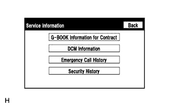
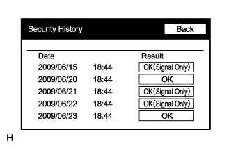

G-BOOK SYSTEM > OPERATION CHECK |
| MANUAL MAINTENANCE CHECK |
Check GPS Reception
Check that the GPS mark is displayed on the present location screen.
Perform Manual Maintenance Check
Open the emergency call switch panel cover.
Turn the engine switch off.
Turn the engine switch on (ACC) or on (IG).
Press and hold about 10 seconds the emergency call switch immediately after the red and green indicators come on.
After the manual maintenance check starts, the green indicator will start blinking. Release the emergency call switch immediately after the green indicator starts blinking.
The system starts accessing the G-BOOK center.
After connecting to the G-BOOK center, data communication is first performed to confirm where the vehicle is, that a manual maintenance check is being performed, and that the customer is registered to the G-BOOK center.
After data communication is completed, the system enters call mode.
Try to talk to the G-BOOK center operator through the microphone to confirm that a call can be made normally and that the call location is correct.
Finish the manual maintenance check after the call to the G-BOOK center operator ends.
The present location screen is displayed after finishing the manual maintenance check.
Check that the green indicator is illuminated.
| EMERGENCY CALL HISTORY |
Enter diagnostic mode (Click here).
 |
Select "Service Information" on the Service Menu screen.
|  |
Select "Emergency Call History" on the Service Information screen.
Emergency Call History
Check the call results.
| Display | Content |
| *1: Type of call | Displays the type of call. |
| *2: Time and date of call | Displays the time and date when a call was made in the form of year/month/day hour:minute. |
| *3: Call result | Displays the result of the communication with the G-BOOK center as follows:
|
| SECURITY HISTORY |
Enter diagnostic mode (Click here).
|
Select "Service Information" on the Service Menu screen.
Select "Security History" on the Service Information screen.
|  |
Security History
Check the results.
| Item | Displayed Content |
| Date | Indicates the time and date when the vehicle automatic alarm was activated in the form of year/month/day hour:minute. |
| Result | Displays the result of the call to the G-BOOK center when the vehicle automatic alarm was activated as follows:
|